Design et Implémentation d'une Infrastructure VMware Résiliente (HA & DRS) avec Clustering ESXi et Stockage iSCSI Partagé
Problématique
| Contexte | Problématique | Objectif |
|---|---|---|
| Une organisation a besoin d'assurer la disponibilité | ||
| d'un serveur Windows Server critique pour ses services. | ✗ Serveur single point of failure (une seule machine) | |
| ✗ Pas de failover automatique en cas de panne hardware | ||
| ✗ Downtime potentiel = perte de productivité | ||
| ✗ Pas de load balancing sur les ressources | ||
| ✗ Stockage local = risque de perte données | ✅ Haute disponibilité | |
| ✅ Failover automatique sans intervention manuelle | ||
| ✅ Équilibrage de charge (DRS) | ||
| ✅ Résilience matérielle | ||
| ✅ Récupération rapide en cas de panne |
Solution
Architecture et environnement
Laboratoire de virtualisation sous VMware vSphere 7.0 : trois hôtes ESXi (version 7.0.0, build 16324942) gérés par un vCenter Server Appliance, dans le domaine labo.local. Pour tirer parti du matériel disponible, l'ensemble repose sur de la virtualisation imbriquée (nested virtualization), répartie sur deux machines physiques : un PC de bureau (Intel Core i5-12400F) et un PC portable (Intel Core i7-9850H).
Hôtes ESXi et ressources
| Hôte | Adresse IP | Machine physique | Mémoire | Stockage | Cartes réseau |
|---|---|---|---|---|---|
esxi1.labo.local |
192.168.100.100 |
PC de bureau, i5-12400F | 16 Go | 850,33 Go (4 banques de données) | 5 |
esxi2.labo.local |
192.168.100.94 |
PC portable, i7-9850H | 8 Go | 270,58 Go (2 banques de données) | 4 |
esxi3.labo.local |
192.168.100.103 |
PC portable, i7-9850H | 8 Go | 204,58 Go (2 banques de données) | 4 |
Services d'infrastructure et plan d'adressage
| Service | Nom DNS | Adresse IP | Hébergement |
|---|---|---|---|
| vCenter Server Appliance (Photon OS) | vcenter.labo.local |
192.168.100.200 |
VM sur esxi1 |
DNS Technitium (enregistrements A/PTR de labo.local) |
n/a | 192.168.100.6 |
PC portable |
| NAS TrueNAS (cible iSCSI) | n/a | 192.168.100.115 |
n/a |
Captures : vCenter, hôtes et DNS
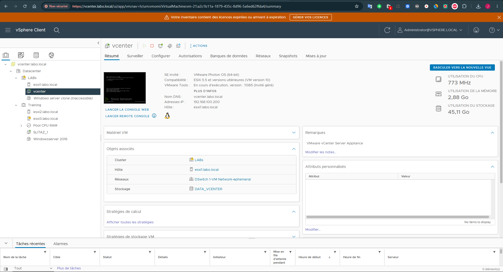
Inventaire vCenter : hôtes ESXi et machines virtuelles
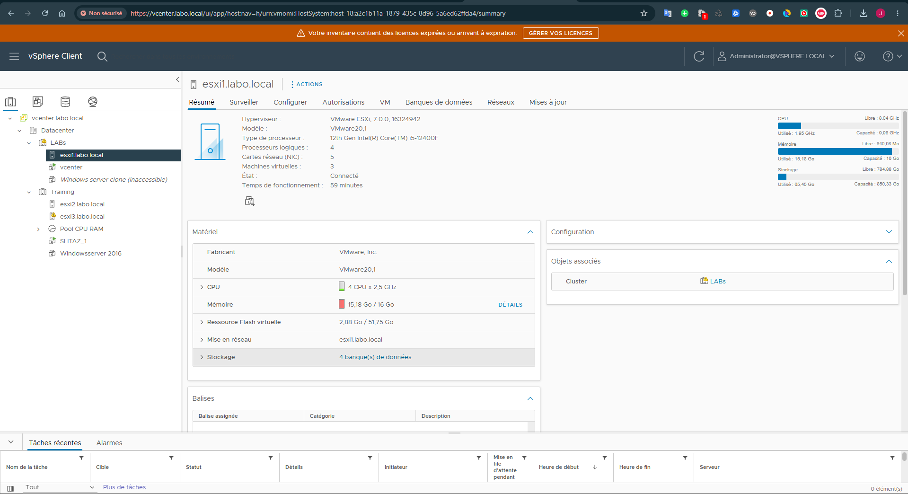
Hôte esxi1 : caractéristiques (processeur, mémoire, stockage, réseau)
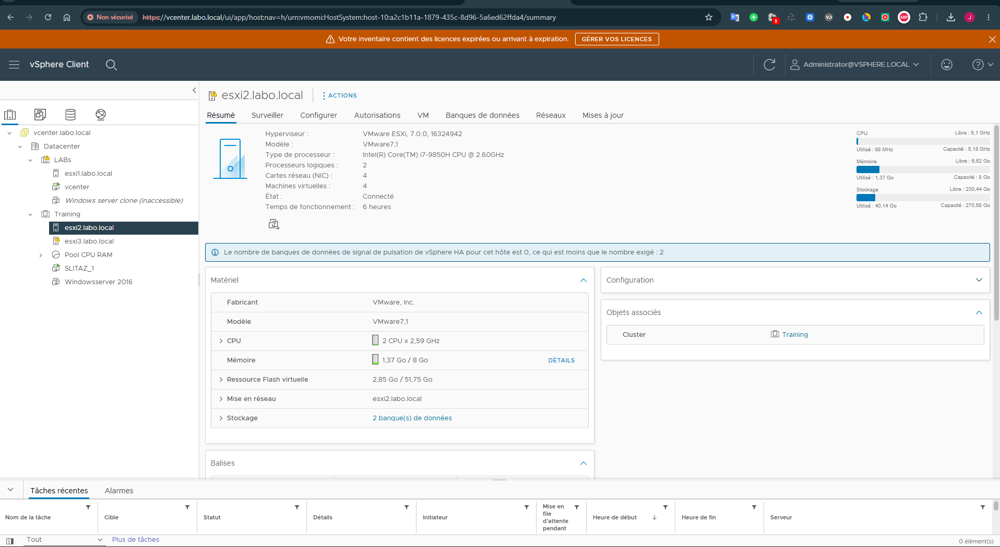
Hôte esxi2 : caractéristiques (processeur, mémoire, stockage, réseau)
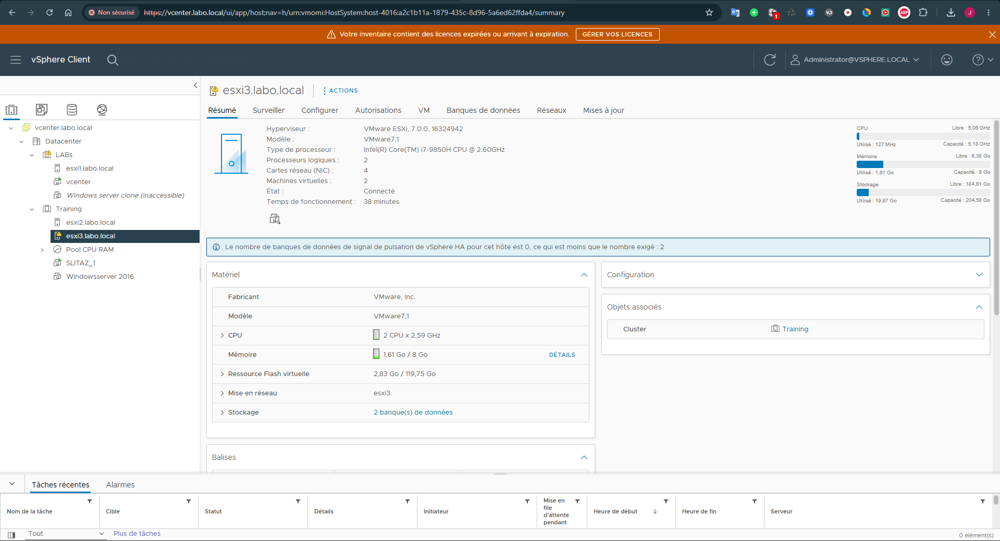
Hôte esxi3 : caractéristiques (processeur, mémoire, stockage, réseau)
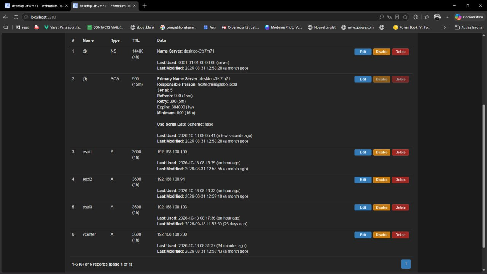
Serveur Technitium DNS : enregistrements de la zone labo.local
Création du cluster
Le datacenter et le cluster sont créés dans vCenter, puis les hôtes ESXi y sont ajoutés. La capture ci-dessous montre le résumé du datacenter et de ses éléments constitutifs.
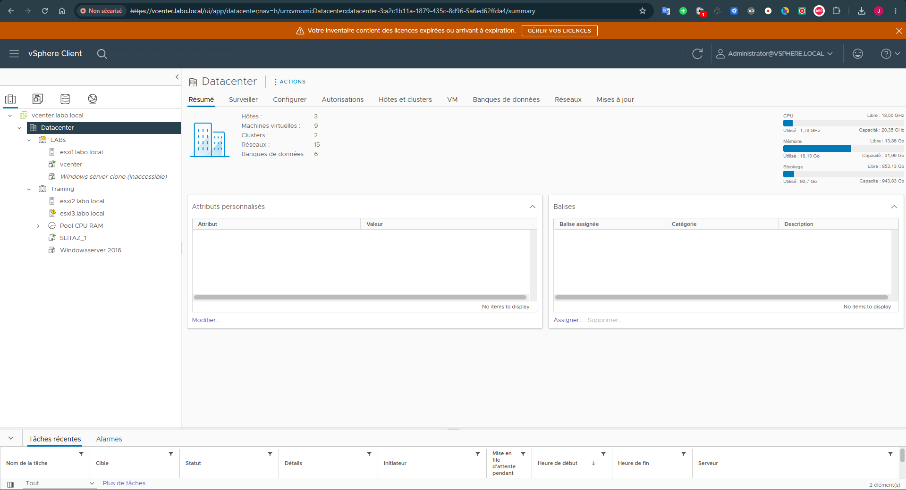
Résumé du datacenter et de ses éléments constitutifs dans vCenter
Réseau virtuel (vSwitch)
Chaque hôte expose des groupes de ports de gestion et de machines virtuelles, ainsi que des interfaces VMkernel dédiées à l'iSCSI, au NFS et à vMotion. esxi1 combine un Distributed Switch (vDS) et des commutateurs standards ; esxi2 et esxi3 utilisent des commutateurs standards.
esxi1.labo.local
- Distributed Switch
DSwitch 1(uplinkuplink1relié aux cartes physiques) : groupes de portsManagement Network,VM Network,VM Network-ephemeral,VMKernel_iSCSI,VMKernel_NFS,VMKernel_vmotionetvSAN. vSwitch0:Management Network,VM Network,VMkernel_iSCSI,VMkernel_NFS,VMkernel_vmotion. Aucune carte physique associée.vSwitch1: groupe de portsWAN, cartesvmnic1,vmnic2etvmnic3(10000 Mbps, full-duplex).
esxi2.labo.local et esxi3.labo.local (commutateurs standards)
| Commutateur / groupe de ports | esxi2 | esxi3 |
|---|---|---|
vSwitch0 : carte physique |
vmnic0 |
vmnic0 |
Management Network (vmk0) |
192.168.100.94 |
192.168.100.103 |
VMkernel_NFS |
vmk1 : 192.168.100.198 |
vmk2 : 192.168.100.106 |
VMkernel_iSCSI |
vmk2 : 192.168.100.191 |
vmk3 : 192.168.100.107 |
VMkernel_vmotion |
vmk3 : 192.168.100.199 |
vmk1 : 192.168.100.105 |
vSwitch1 : groupes de ports |
Réseau de gestion ESXi 2 (vmk4 : 192.168.108.129), VM Network 2 |
Réseau de Gestion Esxi3 (vmk4 : 192.168.108.128) |
vSwitch1 : carte physique |
vmnic2 |
vmnic3 |
vSwitch2 |
n/a | carte vmnic1, aucun groupe de ports pour le moment |
Toutes les cartes physiques indiquées sont rapportées à 10000 Mbps en full-duplex (environnement imbriqué).
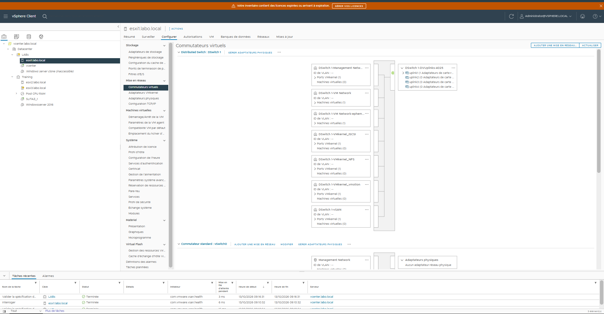
esxi1 : commutateurs virtuels (vDS et vSwitch standards)
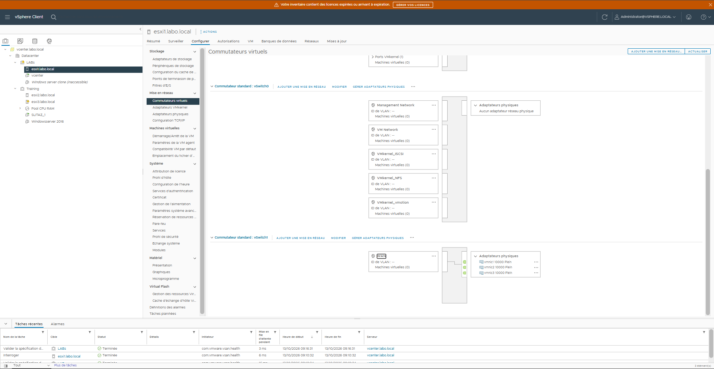
esxi1 : commutateurs virtuels (vDS et vSwitch standards)
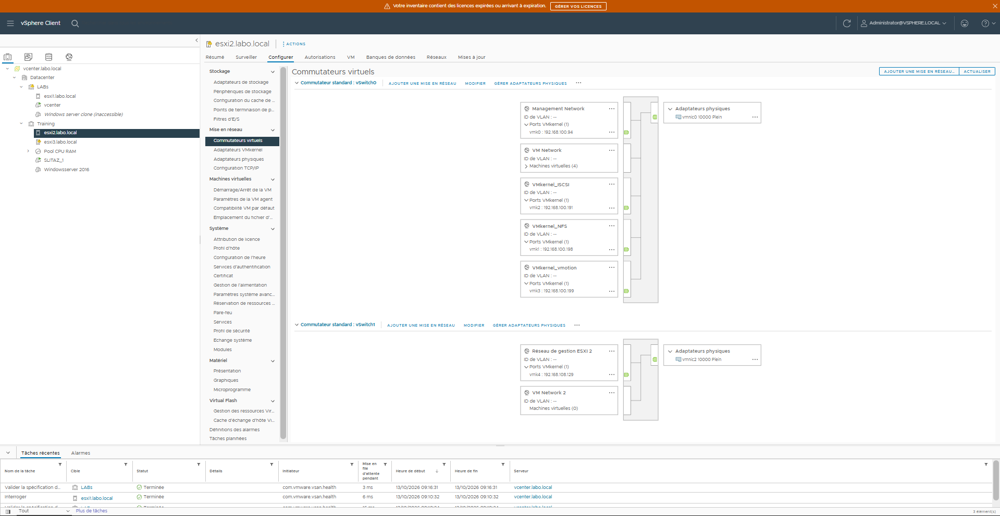
esxi2 : commutateurs virtuels standards, groupes de ports et ports VMkernel
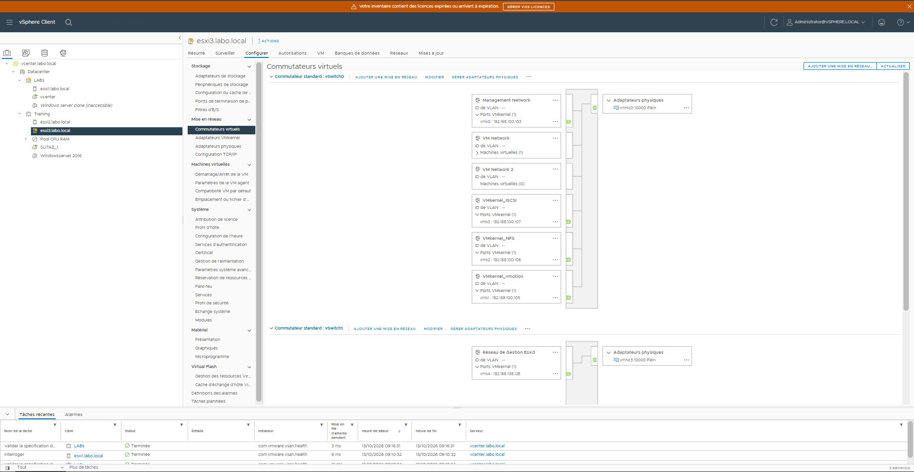
esxi3 : commutateurs virtuels standards, groupes de ports et ports VMkernel
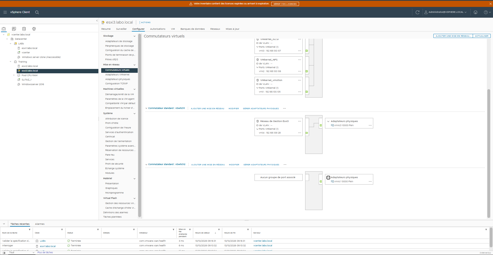
esxi3 : commutateurs virtuels standards, groupes de ports et ports VMkernel
Stockage partagé iSCSI
Le stockage partagé est fourni par un NAS TrueNAS (192.168.100.115) qui expose un partage iSCSI. Sur esxi1, l'adaptateur iSCSI est configuré avec l'adresse IP du NAS, puis l'hôte reconnaît le partage et s'y attache (captures ci-dessous). Les hôtes disposent chacun d'une interface VMkernel dédiée à l'iSCSI (voir la section réseau virtuel).
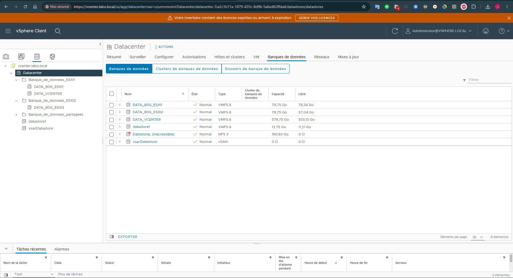
Vue des banques de données dans vCenter, classées par type de stockage (VMFS, NFS, vSAN)
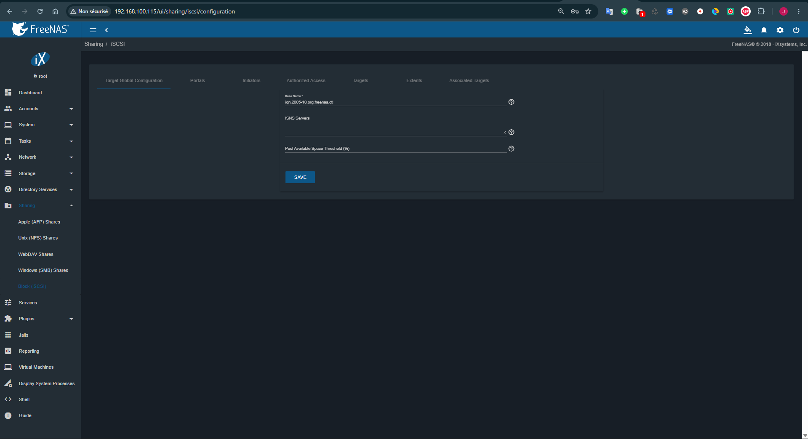
Interface TrueNAS : partage iSCSI configuré
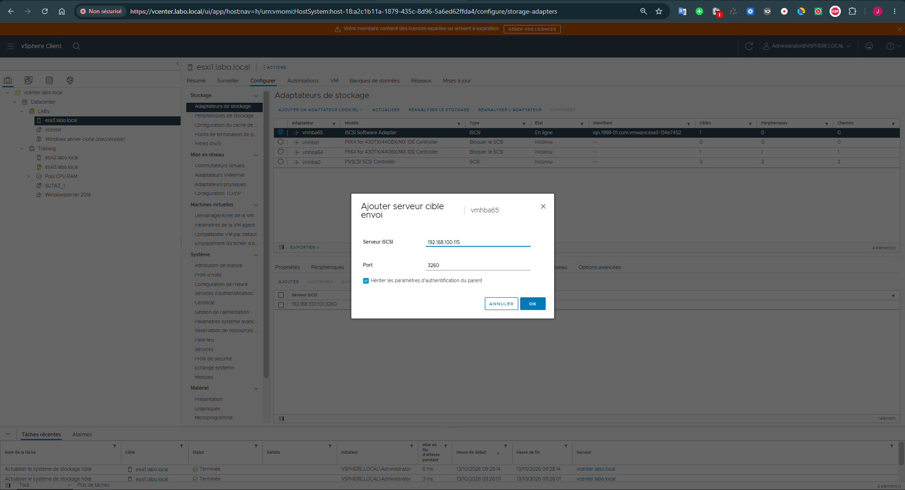
esxi1 : adaptateur iSCSI et ajout de l'adresse IP du NAS TrueNAS
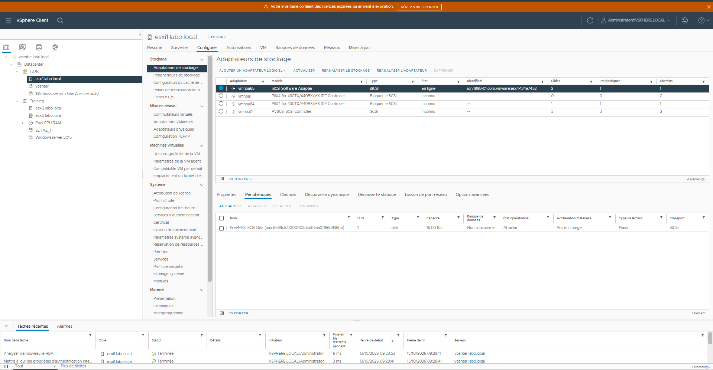
esxi1 : découverte du partage iSCSI et attachement
Banques de données du laboratoire
Le stockage est géré via vCenter et combine des banques de données locales (VMFS 6) et des solutions partagées (NFS, vSAN).
| Banque de données | Type | Capacité | Usage |
|---|---|---|---|
DATA_80G_ESXI1 |
VMFS 6 | 79,75 Go | Local à esxi1 |
DATA_80G_ESXI2 |
VMFS 6 | 79,75 Go | Local à esxi2 |
DATA_VCENTER |
VMFS 6 | 579,75 Go | Infrastructure de gestion (vCenter) |
datastore1 |
VMFS 6 | 13,75 Go | Charges légères |
Datastorej |
NFS 3 | 190,83 Go | Partage réseau entre hôtes |
vsanDatastore |
vSAN | n/a | Pool vSAN mis en place pour explorer la haute disponibilité logicielle |
Haute disponibilité et DRS
Clustering HA (High Availability)
Paramètres configurés : • Isolation Response : Power Off • Restarts VM : Enabled • Heartbeat Datastore : primaire et secondaire • VM Restart Priority : High • Restart Timeout : 5 min • Host Isolation Response : Restart
Avantages : → Si ESXi n° 1 tombe en panne, la VM redémarre automatiquement sur ESXi n° 2 → Aucune intervention manuelle n’est requise
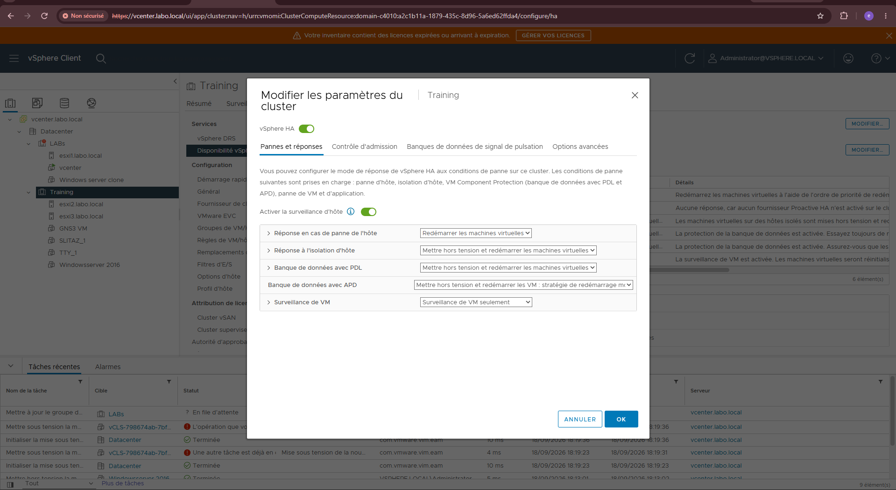
DRS (Distributed Resource Scheduler)
Configuration: • Mode: Fully Automated • Migration Threshold: Aggressive • CPU threshold: 75% • Memory threshold: 80%
Bénéfice: → Équilibre automatique de charge entre ESXi → Optimisation ressources → Prévention hotspots CPU/Memory
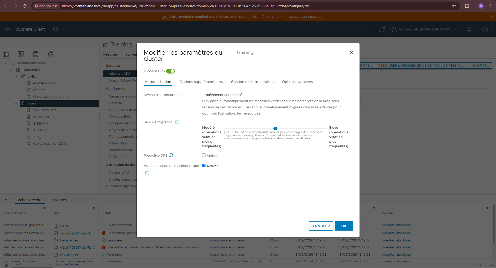
Compétences démontrées
- Cluster VMware HA sur hôtes ESXi : réponse à l'isolation, datastores de heartbeat, priorité et délai de redémarrage des VM (paramètres et capture ci-dessus).
- DRS en mode entièrement automatisé, avec seuils CPU et mémoire (capture ci-dessus).
- Stockage partagé iSCSI (cible TrueNAS) utilisé pour le redémarrage des VM après panne dans la démonstration.
- Réseau virtuel vSphere (vDS, vSwitch standards, interfaces VMkernel iSCSI, NFS et vMotion) et résolution DNS interne avec Technitium.
- Validation par deux scénarios observés lors de la démonstration : répartition automatique des VM par vMotion, puis redémarrage automatique après l'arrêt d'un hôte.
Démonstration de la solution
Cette démonstration montre la résilience automatique d'un cluster VMware HA/DRS face à deux scénarios simulés en laboratoire.
https://drive.google.com/file/d/1Kg6ZdSke1RW1nlnZfTGwLOm02P6glIk3/view?usp=sharing
La démonstration commence avec trois VM (TTY Linux, Slitaz et Windows Server), toutes arrêtées sur l’hôte ESXi 1, tandis que l’hôte ESXi 2 est inoccupé. Je démarre les trois VM simultanément. Le DRS répartit alors automatiquement la charge : comme Windows Server consomme 2 Go, contre 700 Mo au total pour les deux VM Linux, il migre ces dernières vers l’hôte ESXi 2 via vMotion et laisse Windows Server sur l’hôte ESXi 1. En 60 secondes, la charge est ainsi équilibrée (environ 2 Go par hôte), sans intervention.
Pour simuler une panne matérielle, j’arrête ensuite complètement l’hôte ESXi 2. En moins de 10 secondes, le cluster HA détecte la perte du heartbeat et redémarre automatiquement les deux VM Linux sur l’hôte ESXi 1 à partir du datastore iSCSI partagé. Après environ 60 à 90 secondes, tous les services sont de nouveau opérationnels. Windows Server, resté sur l’hôte ESXi 1, n’a jamais été interrompu. Aucune intervention manuelle n’a été nécessaire.
Pilotage du projet — pratiques inspirées d’ITIL 4
Cette synthèse relie les pratiques de gestion de projet et de services aux éléments réellement réalisés dans ce laboratoire VMware. Les validations ci-dessous reposent sur l’architecture décrite, les captures et les deux scénarios filmés. Elle ne constitue pas une certification ITIL ni une preuve de processus ITIL formels en entreprise.
1. Cadrage et périmètre
- ☑ Besoin identifié : réduire le point unique de défaillance d’un serveur et améliorer la disponibilité des machines virtuelles.
- ☑ Périmètre technique défini : trois hôtes ESXi 7.0 imbriqués, vCenter, TrueNAS, stockage partagé et fonctions HA/DRS.
- ☑ Environnement et contraintes matérielles documentés : deux machines physiques, ressources attribuées aux hôtes et virtualisation imbriquée.
- ☑ Versions, noms d’hôtes, adresses IP et services d’infrastructure inventoriés.
- ☑ Limite majeure explicitée : les résultats proviennent d’un laboratoire imbriqué et ne représentent pas des performances garanties sur du matériel de production.
2. Conception et gestion de configuration
- ☑ Architecture vSphere décrite : datacenter, cluster et trois hôtes ESXi administrés depuis vCenter.
- ☑ Réseau virtuel documenté : vDS, vSwitch standards, groupes de ports et interfaces VMkernel de gestion, iSCSI, NFS et vMotion.
- ☑ Services d’infrastructure et adressage documentés : vCenter Server Appliance, DNS Technitium et NAS TrueNAS.
- ☑ Stockage décrit : banques de données VMFS, NFS et vSAN, ainsi que la cible iSCSI TrueNAS et son rattachement à ESXi.
- ☑ Paramètres essentiels de HA et DRS consignés : réponses à l’isolation, heartbeat, priorité et délai de redémarrage, mode automatisé et seuils de migration.
3. Mise en œuvre et changements
- ☑ Cluster vCenter créé et hôtes ESXi ajoutés, avec capture du datacenter et de son inventaire.
- ☑ Réseaux virtuels et interfaces VMkernel configurés sur les hôtes, avec captures à l’appui.
- ☑ Stockage TrueNAS iSCSI configuré et détecté côté ESXi ; les banques de données sont visibles dans vCenter.
- ☑ Services HA et DRS configurés ; leurs paramètres sont présentés dans la documentation et illustrés par des captures.
Non documenté dans ce projet : fiche formelle d’autorisation de changement, analyse d’impact avant chaque modification, plan de retour arrière et preuve d’un rollback. Ces éléments ne sont donc pas déclarés réalisés.
4. Tests et validation
- ☑ Scénario DRS/vMotion exécuté : démarrage simultané de trois machines virtuelles, puis répartition automatique de deux VM Linux vers le second hôte.
- ☑ Résultat du scénario DRS observé et mesuré : équilibrage rapporté en environ 60 secondes, avec une charge d’environ 2 Go par hôte.
- ☑ Scénario de panne d’hôte exécuté : arrêt complet d’ESXi 2 et détection de la perte du heartbeat par HA.
- ☑ Redémarrage automatique des deux VM Linux sur ESXi 1 depuis le stockage partagé iSCSI observé.
- ☑ Reprise du service invité vérifiée : services de nouveau opérationnels après environ 60 à 90 secondes, sans intervention manuelle.
- ☑ Preuves de démonstration disponibles : captures de configuration et vidéo des deux scénarios.
Scénarios non démontrés dans les preuves présentées : perte du datastore ou du réseau iSCSI, panne du réseau de management, restauration depuis sauvegarde, rollback de configuration et validation détaillée des journaux/alertes après chaque incident.
5. Gestion des incidents et des problèmes
- ☑ Une indisponibilité d’hôte a été simulée volontairement comme scénario de test et son effet sur les VM a été observé.
- ☑ Le comportement de reprise HA a été décrit avec la chronologie et les délais observés.
Hors périmètre des preuves disponibles : aucun dossier d’incident réel, ticket, analyse de cause racine, historique d’escalade ou problème récurrent n’est présenté. La panne simulée reste un test de résilience, pas un incident d’exploitation traité selon un processus formel.
6. Exploitation et transfert
- ☑ Inventaire des hôtes, ressources, services, adresses et banques de données disponible dans la fiche projet.
- ☑ Principaux paramètres de configuration HA/DRS consignés.
- ☑ Captures de l’inventaire vCenter, des hôtes, du réseau virtuel, du stockage et des réglages HA/DRS fournies.
- ☑ Limite de la virtualisation imbriquée explicitement indiquée.
À compléter pour un dossier d’exploitation : procédure quotidienne d’administration et de dépannage, supervision et alerting, stratégie de sauvegarde/restauration, gestion des comptes et privilèges, ainsi que procédure de reprise après perte du stockage partagé.
7. Amélioration continue
- ☑ Les résultats des deux scénarios principaux sont présentés et accompagnés de preuves.
- ☑ Une limite structurante du laboratoire — la virtualisation imbriquée et ses ressources — est identifiée.
Pistes d’amélioration identifiées à partir du périmètre actuel : tester séparément les pannes de stockage et de réseau, ajouter une supervision avec alertes, puis documenter les sauvegardes et une restauration vérifiée. Ces travaux restent des suites à réaliser et ne sont pas comptabilisés comme acquis.
Bilan de validation du laboratoire
- ☑ Cluster vCenter et trois hôtes ESXi intégrés.
- ☑ Réseau virtuel et interfaces VMkernel configurés.
- ☑ Stockage partagé iSCSI présenté dans l’environnement.
- ☑ DRS/vMotion observé lors d’un scénario de répartition de charge.
- ☑ HA observé lors de l’arrêt simulé d’un hôte et du redémarrage des VM.
- ☑ Démonstration vidéo et captures disponibles.
Conclusion : le périmètre technique annoncé — administration centralisée vCenter, réseau et stockage vSphere, équilibrage DRS/vMotion et reprise HA — a été mis en œuvre et démontré dans le laboratoire. Le projet peut être considéré comme livré pour ce périmètre. Les tests de panne supplémentaires, la sauvegarde/restauration, la supervision et les processus formels de changement et d’incident restent hors du périmètre validé.